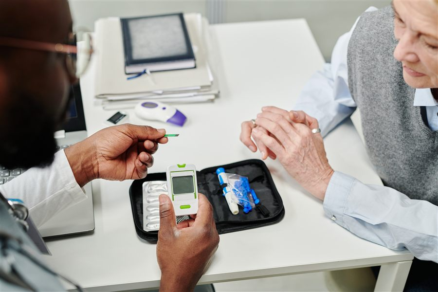

Services
Living with a chronic condition changes your daily rhythm. Medication schedules, follow-up appointments, and small lifestyle decisions all add up. With the right structure and support, however, long-term conditions can be managed steadily and confidently. At our practices in Tongaat and Umhlanga, chronic disease management focuses on helping you stay stable, informed and in control of your health. This approach is further supported through our centre for obesity, hypertension and diabetes excellence, where focused care is provided for conditions that often overlap and influence one another.
Chronic conditions are long-term health conditions that require ongoing care and monitoring. They often develop gradually and may last for years, affecting how the body functions and how daily life is managed. This includes conditions such as diabetes, hypertension, HIV, and in many cases, obesity, which can influence multiple systems in the body and benefit from consistent medical guidance.
Chronic conditions such as diabetes, hypertension and HIV require ongoing monitoring. They do not resolve with a single visit, but improve with consistency.
Your care begins with a comprehensive review of:
From there, a clear management plan is mapped out. Targets are discussed in plain language, and we make sure you understand what each reading means and why it matters.
If you are also working towards weight management goals or improving sports nutrition, those elements are integrated into your plan. Your health does not sit in compartments, but moves as one system.
Regular follow-up appointments are essential. For some patients, this means monthly reviews; for others, visits may be spaced further apart once stability is achieved.
During reviews, we monitor blood pressure, glucose control, and viral load where relevant. Medication adjustments are made carefully. Small changes often prevent bigger complications. If you require executive medical assessments for work or aviation medical examinations, chronic disease stability is reviewed as part of your overall fitness. The aim is to keep you well in daily life and prepared for professional responsibilities.
Medication is important, but lifestyle choices matter just as much.
You receive practical advice on:
If travel is part of your schedule, vaccination planning and chronic condition management can be coordinated so that you remain protected while abroad.
Chronic illness can feel isolating. It can also feel frustrating when your health readings change, even though you are doing your best to take care of yourself. Appointments allow space to discuss concerns. You can ask questions about side effects, fatigue or emotional strain. Physical and mental wellbeing are closely connected, and both are taken seriously.
Poorly controlled chronic conditions can lead to complications affecting the heart, kidneys or nervous system. Steady monitoring reduces those risks, and prevention becomes part of your routine, not an afterthought.
You deserve clarity about your health, and a plan that feels manageable.
If you are living with diabetes, HIV, hypertension or another long-term condition, book a consultation in Tongaat or Umhlanga today. Structured care now can make a meaningful difference to your future health.
Book a Consultation